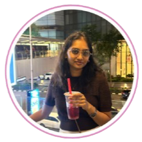

Data & insight
Cleaning, analysing, and transforming raw information into useful outcomes.
Hello, I’m Charu
Data analyst enthusiast, technology explorer, and aspiring front-end developer interested in the space where insight meets impact.

A quick snapshot
I enjoy learning across disciplines and building practical, meaningful solutions from the details.
Cleaning, analysing, and transforming raw information into useful outcomes.
Growing a foundation across programming, business intelligence, and front-end development.
Curious about new ideas, perspectives, and the questions that lead to better work.
A little context
The short version of my journey, interests, and the things that keep me curious.
This is me
I’m a curious person who somehow ended up turning my love for figuring things out into a career in tech. With a background in Computer Science and Data Analytics, I’m currently exploring software development, data, and AI, while constantly finding new things to be fascinated by. Outside the world of code and dashboards, I have a slightly unhealthy level of curiosity about economics, entrepreneurship, business, real estate, and how countries and societies actually work. I enjoy learning, building, questioning things, and occasionally going down internet rabbit holes that started with one simple question. Ultimately, I’m someone who enjoys turning curiosity into ideas and ideas into something useful.
The foundation
Asia Pacific University, Malaysia · 2023 - 2026
Data Structures, Programming for Data Analytics, Data Mining and Predictive Modelling, Statistics, Databases, Object-Oriented Programming
Forest Side Academy, Mauritius · 2017 - 2022
Commerce (Mathematics & Statistics, Economics, Accounting)
What I bring
Tools of the trade
A growing toolkit for exploring ideas, patterns, and useful outcomes.
 AXWAY
AXWAYBeyond the classroom
Selected work
A few things I’ve built while learning, experimenting, and turning ideas into working experiences.


Tech Stack: Python, Streamlit
View on GitHub ↗The journey so far
Experiences that have helped me connect technology, people, and practical outcomes.
At Accenture, I work with ETL processes, analysing SQL queries and transforming data using Axway to prepare reliable datasets for business analysts.
Contributed to digital transformation and analytics-driven decision-making. Involved in automating reports and optimizing file storage processes.
Notes & reflections
Thoughts on learning, coding, and the moments in between.
A note for anyone learning something new and feeling a little behind.
Read the article ↗
Here are 5 everyday Mauritian problems that technology could fix; some already being solved, some still waiting. Grab your dholl puri. This one hits close to home.
Read on Medium ↗Say hello
Networking starts here — follow, message, collaborate!